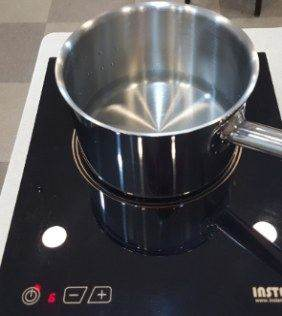
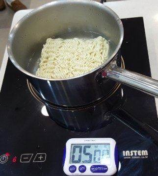
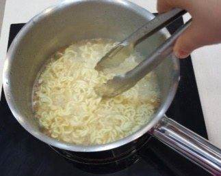
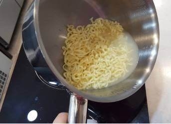
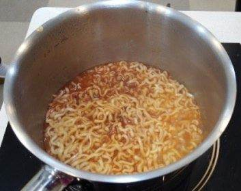
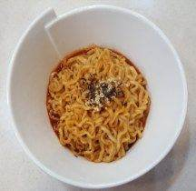

| 메뉴명 | 불닭볶음면 |
|---|---|
| 판매가격 | 4,500원 |
| 원재료 | 삼양 불닭볶음면 |
| 사용 부자재 | 라면용기 |
| 메뉴특징 | 고추씨 기름과 매운 고춧가루 분말을 사용하여 매운 라면을 선호하는 고객에게 알맞은 라면 |






※ 토핑 추가 ※
▶계란프라이 1개 마지막에 올리기 / 만두 4개(튀김시간 : 4분)
▶치즈: 마지막에 올리기
*본 매뉴얼은 벌툰에 저작권이 있습니다. 유출 및 복제를 금합니다.
※ 기존 라면조리기:
[볶음라면]모드로 조리하기
※ 제조 후 최대한 빨리 제공할 것.